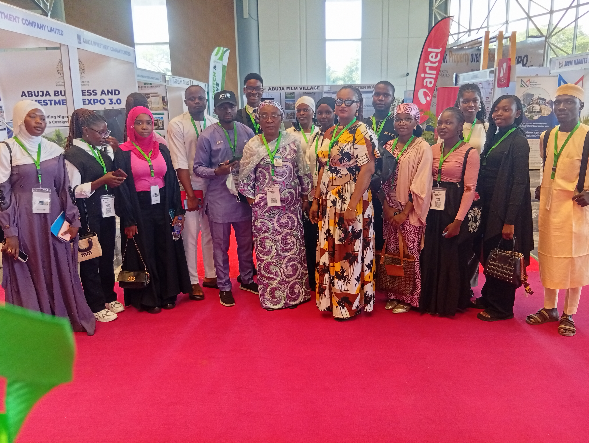
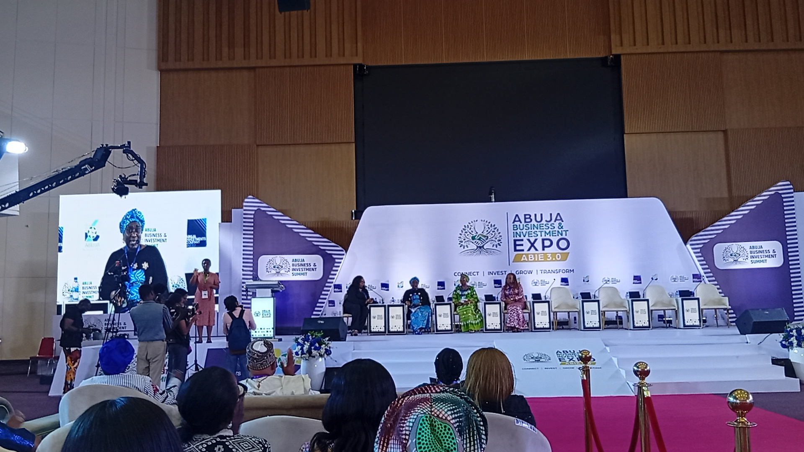
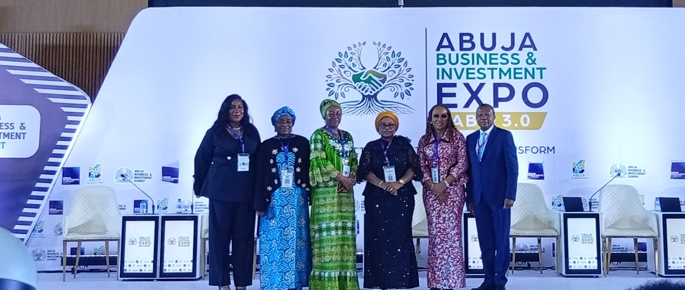

Executive learning
Executive Certificate
Practical gender studies for professionals, leaders and development practitioners.
Enquire →Centre for Gender Studies · NSUK
We connect postgraduate scholarship, research and community action to advance gender-responsive leadership and development in Nigeria.

Who we are
At the Centre for Gender Studies, we create the knowledge, capacity and conversations that support a more equitable society.
Discover our work →
Our approach
We bring together students, researchers, policymakers, civil society and communities around the issues that shape everyday opportunity.
Study with us
Interdisciplinary learning for the classroom, public service, research, policy and development practice.
Executive learning
Practical gender studies for professionals, leaders and development practitioners.
Enquire →Postgraduate study
Develop critical insight, research capability and professional confidence.
Explore study →Advanced research
Advance original scholarship that responds to complex gender questions.
Research with us →
In the field
At Abuja Business & Investment Expo 3.0, the Centre's campus ambassadors joined conversations on entrepreneurship, women's leadership, investment and inclusive growth.
Our work makes space for bold thinking — and helps turn it into stronger institutions, policy and possibility.
Explore our activities →Research & engagement
Research and dialogue on public policy, leadership, institutions and inclusive development.
Supporting pathways that expand learning, leadership and economic opportunity.
Building knowledge for safer, more just and resilient communities.
Event spotlight
The Centre joins a growing conversation on entrepreneurship, leadership and access to opportunity.
Read the story →Start a conversation